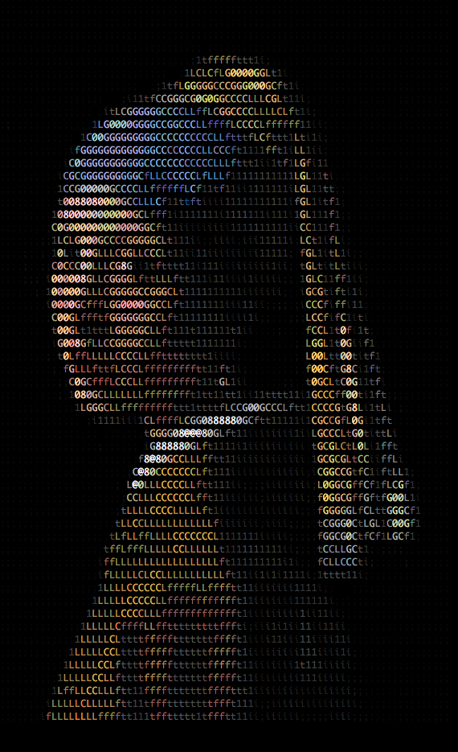

ASCII art has a rich history that dates back to the early days of computing. It emerged as a way to create visual representations using only the characters available in the ASCII standard.
Over the years, ASCII art has evolved and become more sophisticated, with artists creating intricate designs and even animations using only text characters.
Today, ASCII art continues to be a popular form of digital art, with communities and websites dedicated to sharing and celebrating this unique art form.
Many innovations have been made, such as adding colour, and characters of different opacities

return home